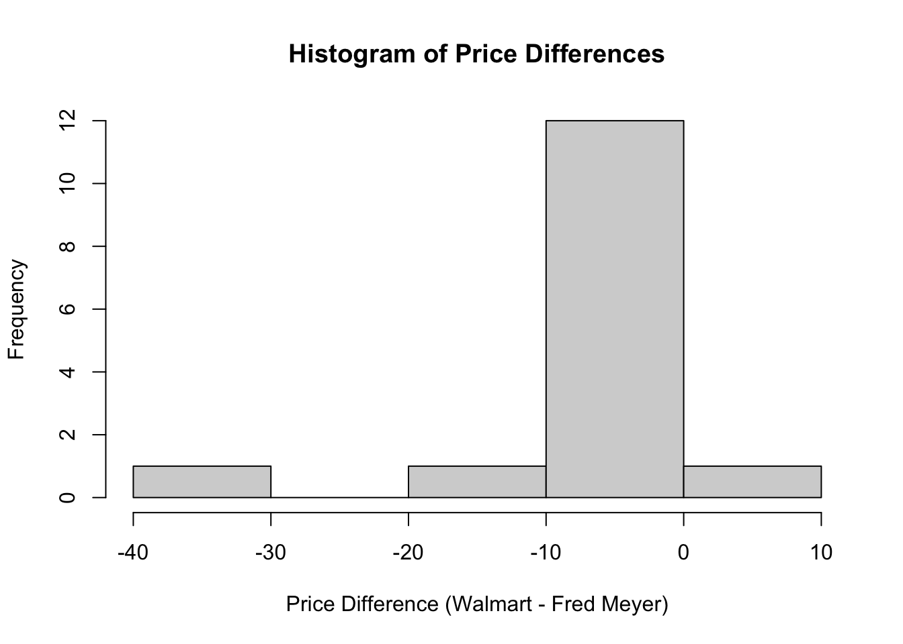
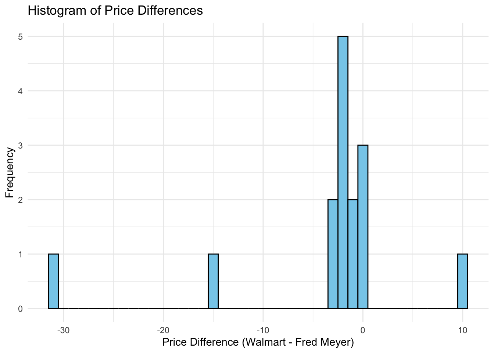

Reminder of the honor code: Lab assignments are to be completed individually!
Data Collection
For Lab Assignment 2, I collected data from two grocery stores: Walmart and Fred Meyer. The goal is to compare the prices of 15 identical items between the two stores to determine if there is a significant difference in average prices. Below are the data I compared:
Product
WalmartPrice
FredMeyerPrice
Coca-Cola 24pk
$12.98
$14.99
Scrub Daddy 1pk
$3.88
$4.99
First Response Pregnancy Test 2pk
$8.98
$11.99
Oreo Family Pack 18.12oz
$4.88
$4.99
Stella Rosa Black 750ml
$10.98
$12.99
Tillamook Medium Cheddar Block 32oz
$12.48
$13.99
Samsung 65in Crystal HDR 4K TV
$468.00
$499.00
Enfamil NeuroPro Baby Formula 27.4oz
$52.00
$54.99
Maseca Corn Masa Flour 4lbs
$3.98
$4.29
Cacique Ranchero Queso Fresco 10oz
$3.68
$3.69
Purina One Dry Dog Food 16.5lb
$30.28
$31.99
Bounty Paper Napkins 200ct
$3.48
$4.29
Luna Lemonzest Nutrition Bars 12ct
$14.46
$15.99
Coleman Cooler 52qt
$49.99
$39.99
Corona Heavy-Duty Weeding Hoe
$62.57
$77.51
Once you have your data, decide whether a two-sample t-test or paired t-test is appropriate based on how you collected your data. For my comparison, I will use a paired t-test since the products are identical at both stores.
Lab Assignment Walk-Thru
1. Hypothesis Test
Hint:
We are using a paired t-test since the products are identical across both stores. Use this test to check whether there is a significant difference in average prices.
# Load Correct Librarieslibrary(readr)library(mosaic) # Note I do not use this package# Download Data Remotelyurl <-"https://raw.githubusercontent.com/bcervantesalvarez/MS-Statistics/refs/heads/main/Academic-Year-2024-2025/Fall%202024/ST-352-Labs/Lab2/storePrices.csv"download.file(url, "storePrices.csv")# Import the dataset from the CSV fileproducts <-read_csv("storePrices.csv")names(products)
[1] "Product" "WalmartPrice" "FredMeyerPrice"
# Convert price columns to numericproducts$WalmartPrice <-as.numeric(gsub("\\$", "", as.character(products$WalmartPrice)))products$FredMeyerPrice <-as.numeric(gsub("\\$", "", as.character(products$FredMeyerPrice)))# Display the datasethead(products)
# A tibble: 6 × 3
Product WalmartPrice FredMeyerPrice
<chr> <dbl> <dbl>
1 Coca-Cola 24pk 13.0 15.0
2 Scrub Daddy 1pk 3.88 4.99
3 First Response Pregnancy Test 2pk 8.98 12.0
4 Oreo Family Pack 18.12oz 4.88 4.99
5 Stella Rosa Black 750ml 11.0 13.0
6 Tillamook Medium Cheddar Block 32oz 12.5 14.0
2. Hypotheses
The hypotheses for the paired t-test:
H_0: \mu_{\text{diff}} = 0 (No difference in average prices between Walmart and Fred Meyer)
H_1: \mu_{\text{diff}} \neq 0 (There is a difference in average prices between Walmart and Fred Meyer)
# Calculate the price differences between Walmart and Fred Meyerproducts$Difference <- products$WalmartPrice - products$FredMeyerPriceproducts$Difference
Check if the price differences follow a roughly normal distribution by plotting a histogram:
# Plot a histogram of the price differences# Plot histogramhist(products$Difference, main ="Histogram of Price Differences",xlab ="Price Difference (Walmart - Fred Meyer)")

# Plot the histogram using ggplot2ggplot(products, aes(x = Difference)) +geom_histogram(binwidth =1, color ="black", fill ="skyblue") +labs(title ="Histogram of Price Differences", x ="Price Difference (Walmart - Fred Meyer)", y ="Frequency") +theme_minimal()

4. T-Statistic and P-Value
Perform the paired t-test to get the t-statistic and p-value.
# Perform paired t-testt_test_result <-t.test(products$WalmartPrice, products$FredMeyerPrice, paired =TRUE)# Output t-statistic, p-value, and degrees of freedomt_test_result$statistic # T-statistic
t
-1.523479
t_test_result$p.value # P-value
[1] 0.1499046
t_test_result$parameter # Degrees of freedom
df
14
5. Conclusion
Based on the p-value, we will determine whether to reject the null hypothesis.
# Conclusionif(t_test_result$p.value <0.05) { conclusion <-"Reject the null hypothesis: There is a significant difference in prices."} else { conclusion <-"Fail to reject the null hypothesis: No significant difference in prices."}conclusion
[1] "Fail to reject the null hypothesis: No significant difference in prices."
6. Confidence Interval
Compute the 95% confidence interval for the mean price difference.
Based on the mean price difference, decide which store is cheaper overall.
# Store preferenceif(mean(t_test_result$conf.int) >0) { store_preference <-"Fred Meyer is generally cheaper"} else { store_preference <-"Walmart is generally cheaper"}store_preference